서울과학기술대학교 2027 면접 가이드북
서울과학기술대학교 면접에서 실제로 나온 질문과, 내 생기부에서 질문을 뽑는 전환 규칙.
선배 후기 2017~2026 관측과 2027 공식 요강으로 재구성한 현학적 연구소 편집본.
서울과기대 학교생활우수자전형 면접은 서류기반 면접입니다.
이 가이드북은 기출 151문과 생기부 질문 규칙 45개를 담았고 권당 33,000원입니다.

서울과학기술대학교 2027 면접 가이드북
33,000원부가세 포함, 보안 리더 열람 1개월- 실제 질문선배 후기 2017~2026 관측, 유형별 수록
- 전환 규칙내 생기부에서 질문 뽑기, 꼬리질문까지
- 전형 분석전형별 제원, 형태 판정표
- 형태PDF, 브라우저 보안 리더
- 인쇄계정당 3회, 원본 파일 비제공
결제 후 마이페이지에서 브라우저 보안 리더로 바로 열림. 열람 기간은 구매일부터 1개월. 아직 열지 않은 권은 공급받은 날부터 7일 이내 청약철회 가능. PDF 소장판은 워터마크 파일을 발급해 소장.
한눈에 보는 서울과학기술대학교 면접
아래 수치는 이 책이 실제로 담고 있는 분량입니다.
- 면접 형태
- 서류기반
- 면접 있는 전형
- 3개
- 실제 기출
- 151문, 선배 후기 2017~2026년 관측
- 모집단위
- 22개
- 생기부 질문 규칙
- 45개
- 질문 유형
- 13개
- 분량
- 34면, 다섯 부
- 가격과 열람
- 33,000원, 보안 리더 열람 1개월 (PDF 소장판 110,000원)
지면 미리보기
판매본 그대로의 지면. 본문은 흐림 처리, 구매 후 전체가 선명하게 열립니다.
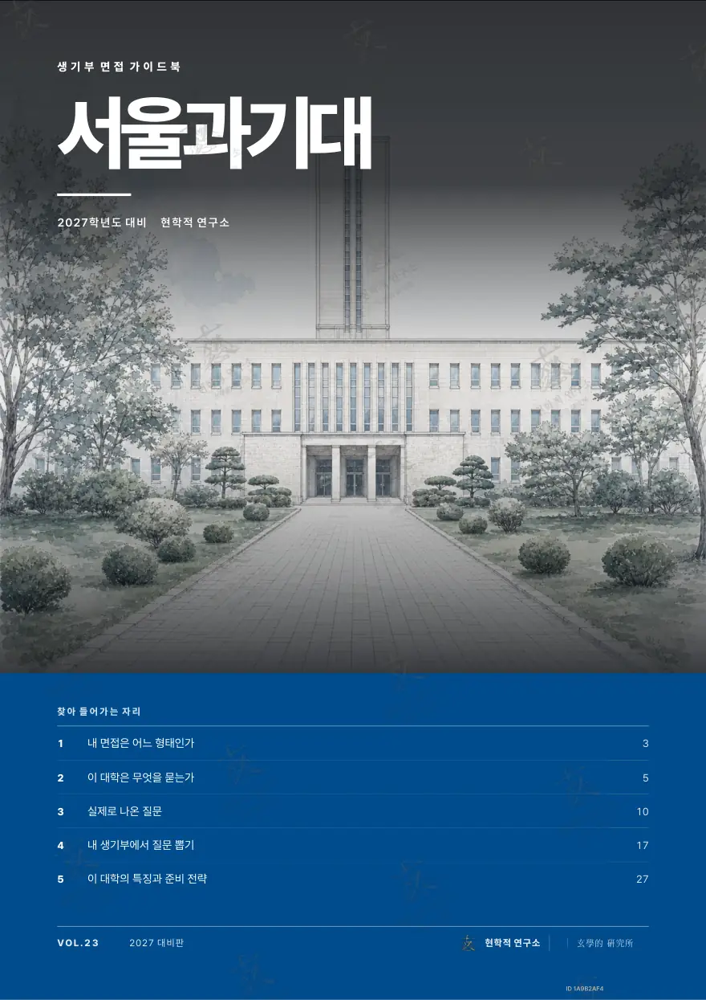
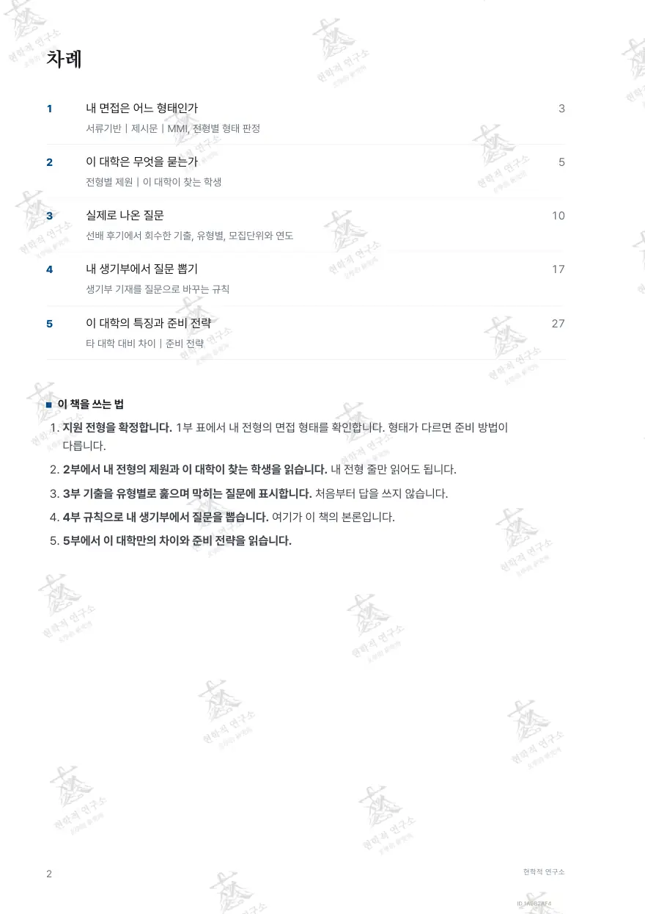
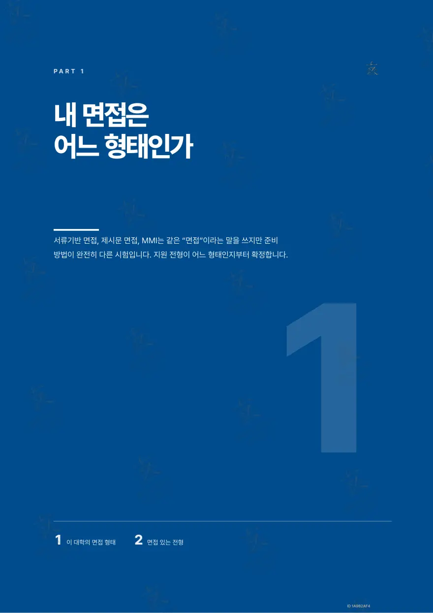
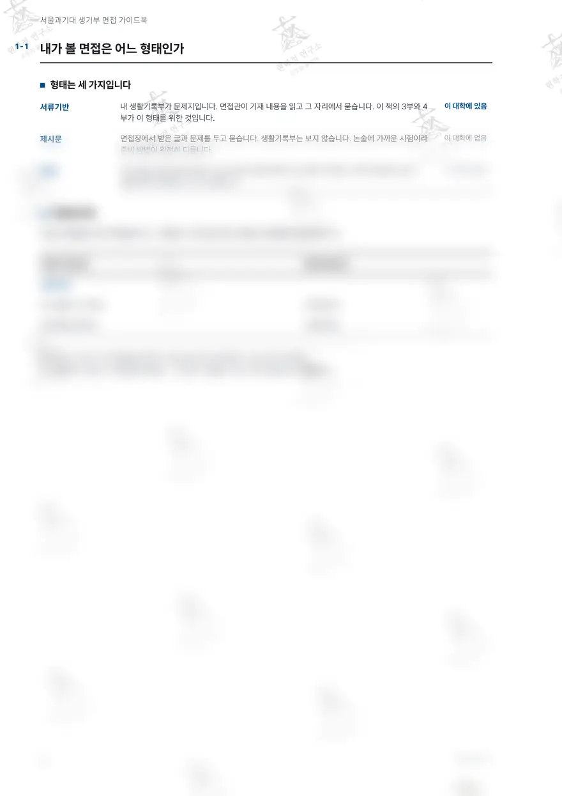
구매 후 선명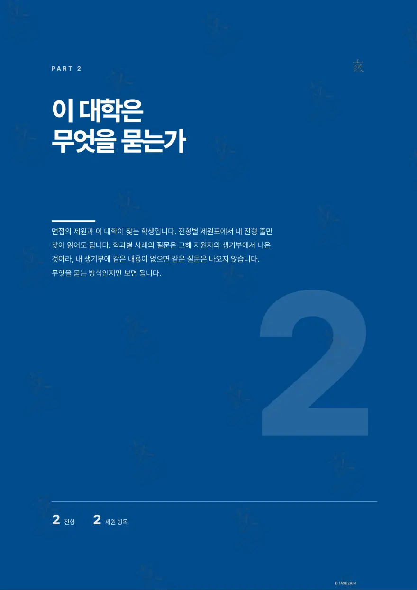
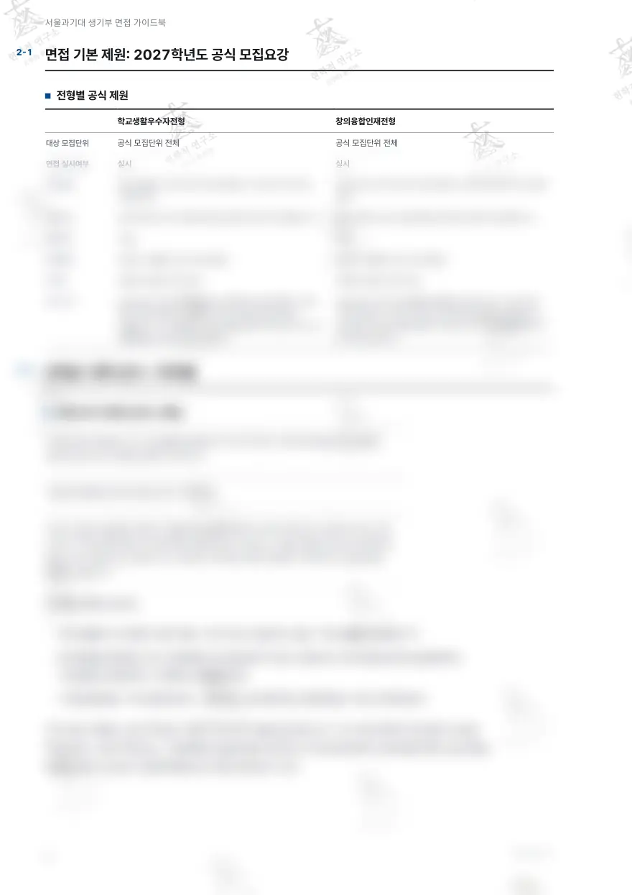
구매 후 선명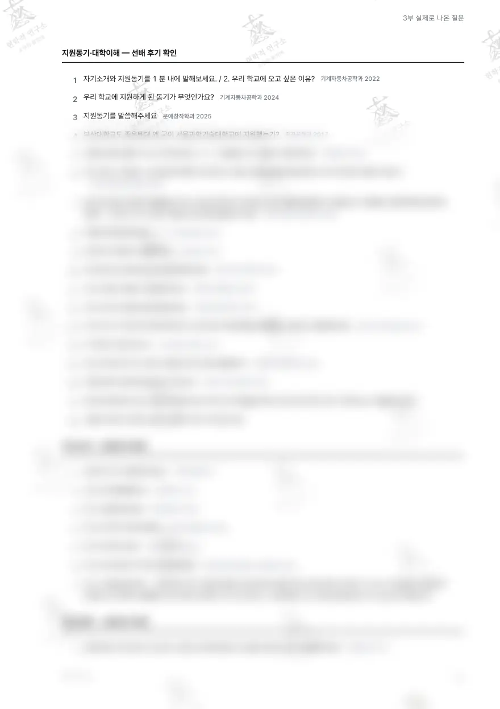
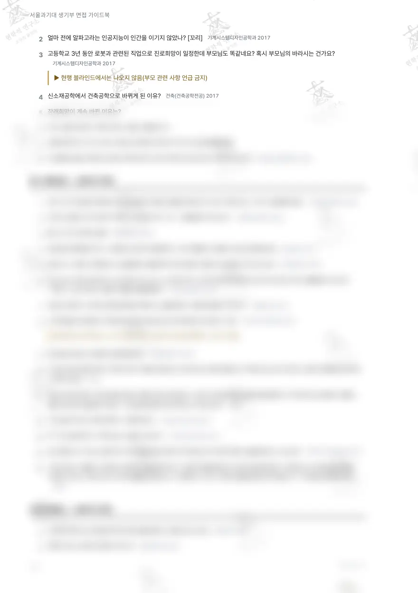
구매 후 선명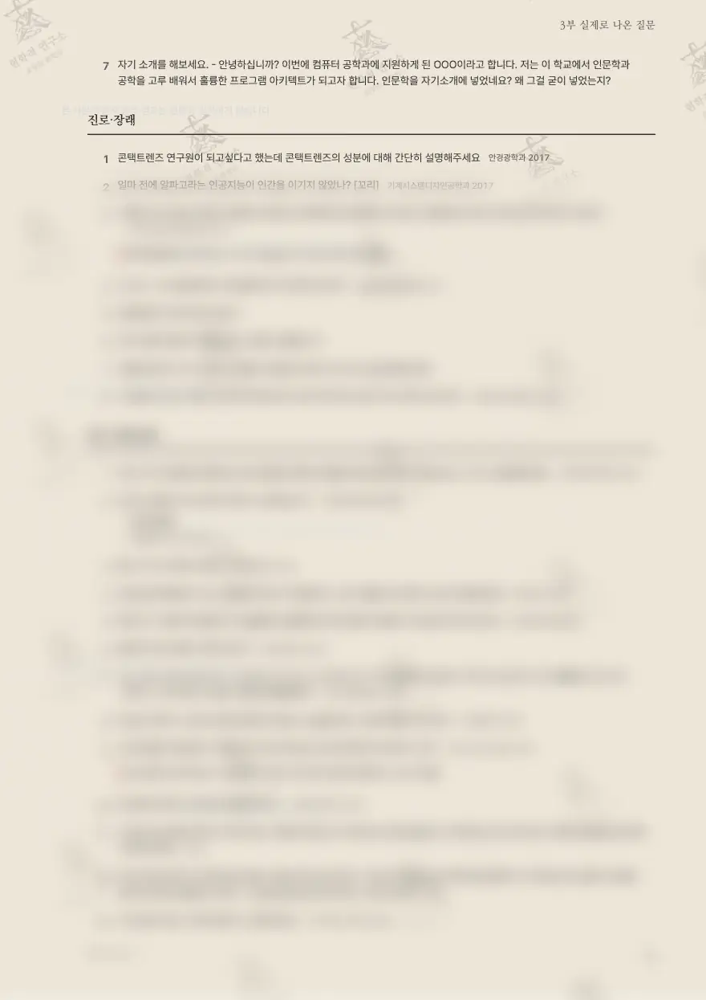
구매 후 선명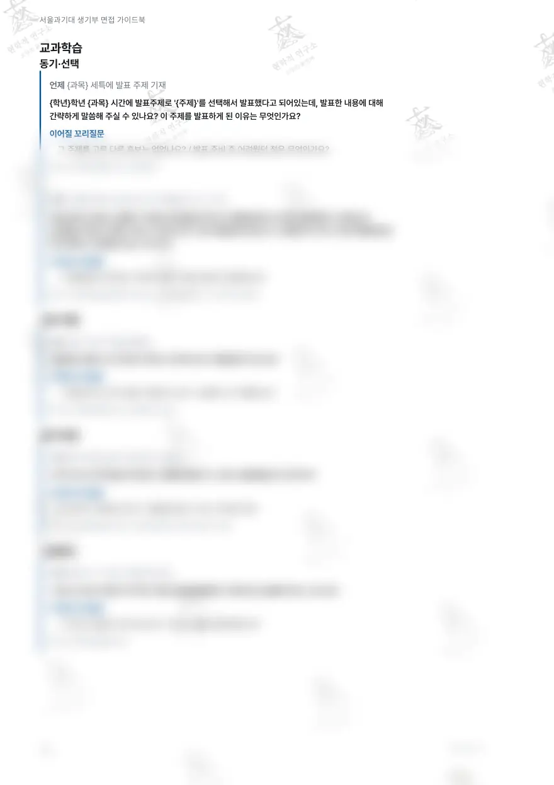
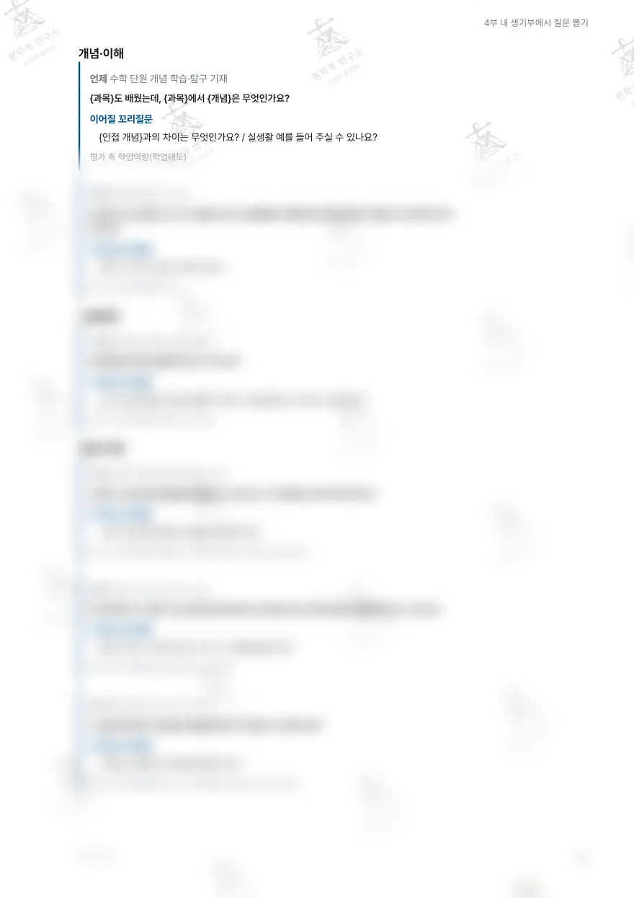
구매 후 선명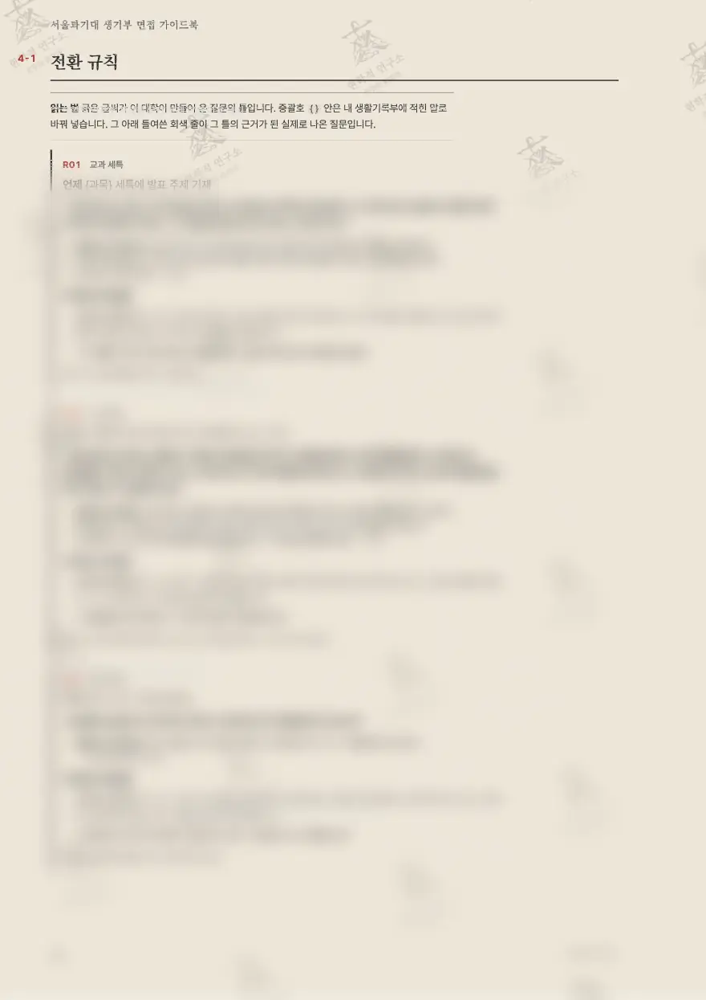
구매 후 선명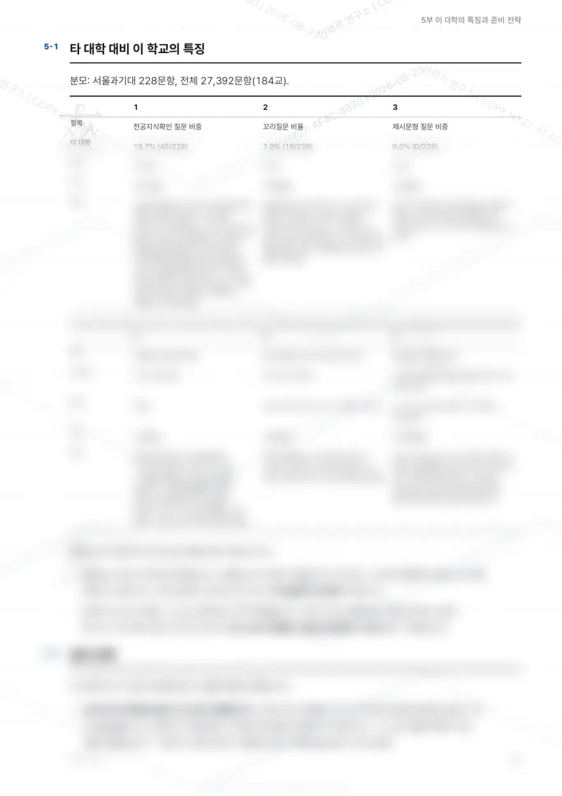
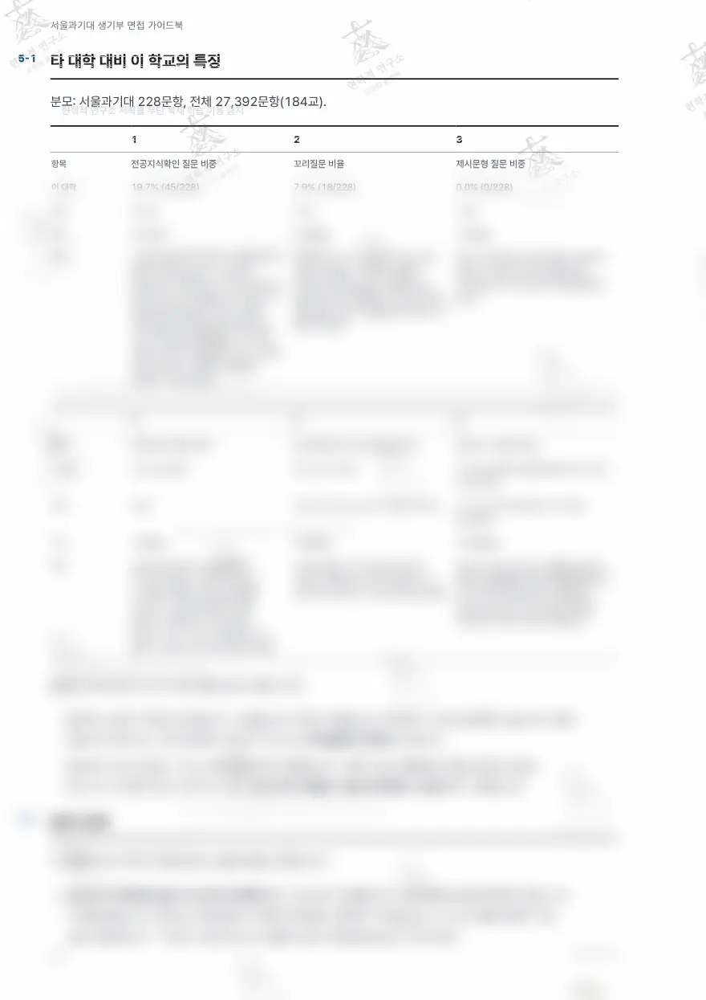
구매 후 선명각 지면 아래 숫자는 실제 면 번호입니다. 워터마크는 열람 계정마다 다르게 찍힙니다.
다섯 부로 끝나는 구성
표지의 차례 그대로입니다.
내 면접은 어느 형태인가
서류기반｜제시문｜MMI, 전형별 형태 판정
이 대학은 무엇을 묻는가
전형별 제원｜이 대학이 찾는 학생
실제로 나온 질문
선배 후기에서 회수한 실제 질문, 유형별, 모집단위와 연도
내 생기부에서 질문 뽑기
생기부에서 질문 뽑는 전환 규칙
이 대학의 특징과 준비 전략
타 대학 대비 차이｜준비 전략
이 대학의 면접, 판정부터
1부와 2부가 하는 일. 형태가 다르면 준비 방법이 다릅니다.
- 학교생활우수자전형서류확인형
- 창의융합인재전형서류확인형
- 기회균형전형서류확인형
질문 유형
실제로 나온 질문을 이 유형들로 나눠 싣습니다.
맛보기
유형별 첫 수록 질문.
- 지원동기,대학이해
자기소개와 지원동기를 1 분 내에 말해보세요.
- 자기소개
간단한 자기소개를 해주세요
- 진로,장래
콘택트렌즈 연구원이 되고싶다고 했는데 콘택트렌즈의 성분에 대해 간단히 설명해주세요
- 탐구,세특심화
여러 가지 센서를 만져봤다는데 센서를 탐구해본 경험을 바탕으로 가장 기억에 남는 거 하나 설명해보세요
전체 질문과 유형 해설은 책 본문에.
전환 규칙, 이 책의 본론
생기부의 기재 한 줄이 어느 질문으로 바뀌는지. 규칙마다 실제로 나온 질문과 꼬리질문이 붙습니다.
언제 {과목} 세특에 발표 주제 기재
언제 수행평가에서 문제 제기 후 해결방안 조사 기재
언제 실험 수행 기재({실험명})
규칙의 질문 틀과 실제 질문, 꼬리질문은 본문에서. 위 미리보기 지면에 흐림 처리로 실려 있습니다.
5부 준비 전략
이 대학만의 차이에서 나온 전략. 제목만 싣습니다.
- 01생기부 전 항목을 질문 리스트로 변환합니다
- 02눈에 띄지 않는 활동까지 포함합니다
- 03실험, 탐구 기재는 3단 세트로 만듭니다
- 04생기부에 적힌 용어는 전부 구술 정의를 준비합니다
- 05꼬리질문 3형(범위 축소, 개념 하강, 반례 제시)으로 자문자답 훈련합니다
- 06팀 활동은 본인 기여 경계를 먼저 말합니다
- 07성적 변동 구간마다 한 문장 설명을 만듭니다
- 08학과 커리큘럼과 대학 특화 분야를 조사합니다
전략의 제목 일부입니다. 본문과 근거는 책에서.
자주 묻는 질문
서울과학기술대학교 면접과 이 가이드북에 대해.
서울과학기술대학교 학교생활우수자전형 면접은 어떤 형태인가요?
학교생활우수자전형, 창의융합인재전형은 모두 서류기반 면접입니다. 1부 판정표에서 지원 전형의 면접 형태를 확인합니다.
서울과기대 학교생활우수자전형 면접 기출문제는 몇 문항 실려 있나요?
선배 후기 2017~2026년에서 회수한 서울과기대 면접 기출문제 151문을 22개 모집단위, 13개 유형으로 나눠 3부에 실었습니다.
서울과기대 면접 예상문제는 생기부에서 어떻게 뽑나요?
4부의 전환 규칙 45개가 내 생기부 기재를 서울과기대 면접 예상 질문으로 바꿉니다. 규칙마다 기재 조건과 실제 기출, 꼬리질문이 붙습니다.
가격과 열람 기간은 어떻게 되나요?
보안 리더 열람판 33,000원, PDF 소장판 110,000원입니다. 열람 기간은 구매일부터 1개월, 인쇄는 권당 3회, 원본 파일은 제공하지 않습니다.
서울과학기술대학교 면접에 제시문이 나오나요?
서울과기대 면접에 제시문은 없습니다, MMI는 없습니다. 1부 판정표가 전형별로 형태를 가릅니다.
서울과학기술대학교 면접은 어떤 유형의 질문이 나오나요?
지원동기,대학이해, 자기소개, 진로,장래 등 13개 유형입니다. 3부가 유형별로 실제로 나온 질문을 모아 싣습니다.
생기부의 어느 항목이 질문이 되나요?
교과 세특, 창체 자율, 동아리 등 11개 영역입니다. 4부 규칙이 영역마다 어떤 기재가 질문으로 바뀌는지 밝힙니다.
구매 전에 지면을 볼 수 있나요?
표지와 각 부 들어가는 면은 선명하게, 본문은 흐림 처리로 판매본 그대로의 지면을 미리 보실 수 있습니다.
인쇄하거나 파일로 저장할 수 있나요?
보안 리더 열람판은 계정당 3회까지 인쇄할 수 있고 원본 파일은 제공하지 않습니다. 파일이 필요하면 PDF 소장판 110,000원입니다.
서울과기대 서류기반 면접은 어떻게 준비하나요?
서울과기대 학교생활우수자전형 면접은 서류기반 면접(생기부 면접)으로 내 생기부가 문제지입니다. 1부 판정, 2부 제원, 3부 기출, 4부 규칙, 5부 전략 순서로 준비합니다.
서울과기대 면접컨설팅이나 서울과기대 모의면접도 하나요?
서울과기대 학교생활우수자전형 면접은 서류기반이라 별도 면접컨설팅 없이 가이드북의 기출과 예상 질문 규칙으로 준비합니다. 모의면접 스튜디오는 연세대, 고려대 제시문 면접만 운영합니다.
서류기반 면접을 보는 다른 대학
서울과학기술대학교와 면접 형태가 같아 준비 방법이 겹치는 대학입니다.
이 학교부터 담기
서울과학기술대학교 2027 면접 가이드북, 33,000원. 보안 리더 열람 1개월.